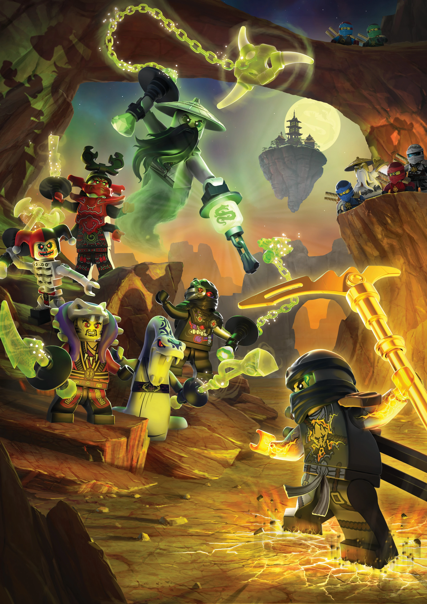

Day of the Departed

Contents
- TV Special
- Main/Returning Cast
- See also
TV Special
Day of the departed is a Halloween special for the animated TV series, ’’Lego Ninjago’’. It was released on October 29, 2016, coinciding with Halloween and takes place between season 6 and 7. The special takes place on the Day of the Departed, a day where people honour the memories of their deceased loved ones. The story is focused on the black ninja, Cole, who becomes worried about fading away in his ghost form while fighting the main antagonist of the special, Sensei Yang. While Cole is battling Yang in Yang’s temple, the other ninja must battle the spirits of old enemies that he has accidentally released from the Departed Realm. The spirits each possess their own mannequins from the Ninjago History Museum, which brings them to life. After a massive battle, Cole goes through the Rift of Return created by the Yin Blade, which allows him to become human one again. The ninja celebrate the return of Cole and decide to use Yang’s temple and their new base.
Cast
Main
- Jillian Michaels as Lloyd, Green ninja and elemental master of energy
- Vincent Tong as Kai, Red ninja and elemental master of fire
- Brent Miller as Zane, White ninja and elemental master of ice
- Michael Adamthwaite as Jay, Blue ninja and elemental master of lightning
- Kirby Morrow as Cole, Black ninja and elemetnal master of earth
- Kelly Metzger as Nya, Grey/blue ninja and elemental master of water
- Paul Dobson as Sensei Wu, master of the ninja
- Jennifer Hayward as P.I.X.A.L, a female nindroid
- Kathleen Barr as Misako, an archaeologist and Lloyd’s mother
Returning
- Andrew Francis as Morro
- Michael Kopsa as Samukai
- Michael Donovan as Sensei Yang
- Ian James Corlett as Master Chen
- Richard Newman as General Cryptor
- Paul Dobson as Pythor
- Michael Daingerfield as Dr. Saunders
- Brian Dobson as Ronin
- Kirby Morrow as Lou
- Alan Marriott as Dareth
- Colin Murdock as Ed
- Jillian Michaels as Edna
See also
Tope of the Page
Citations page
Validator links: